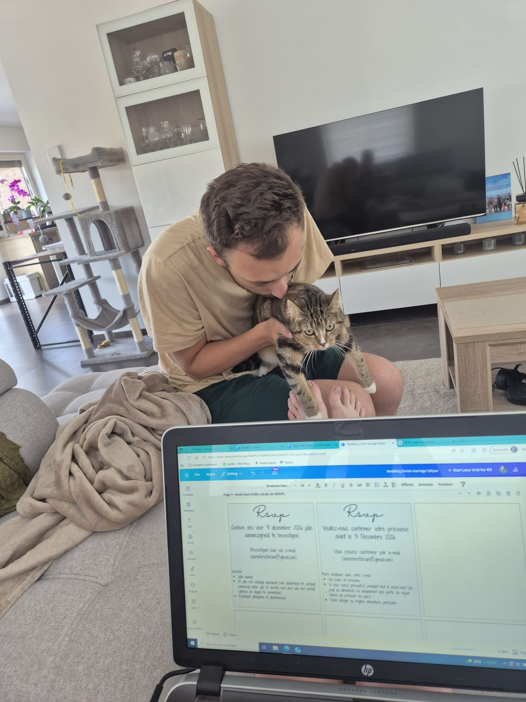
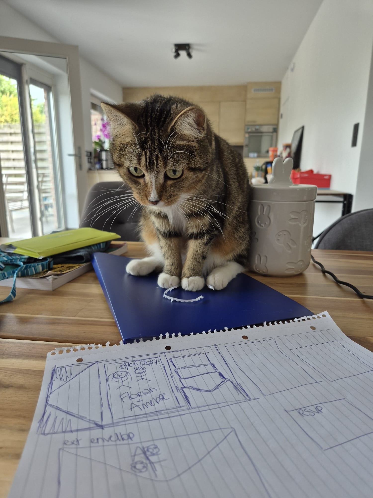
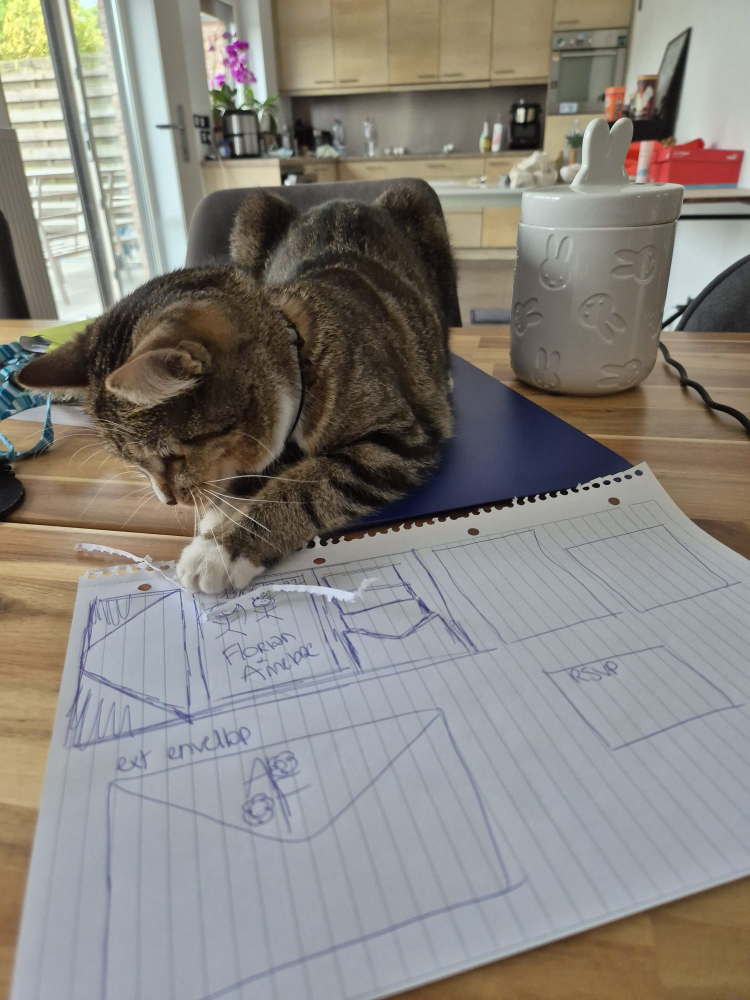
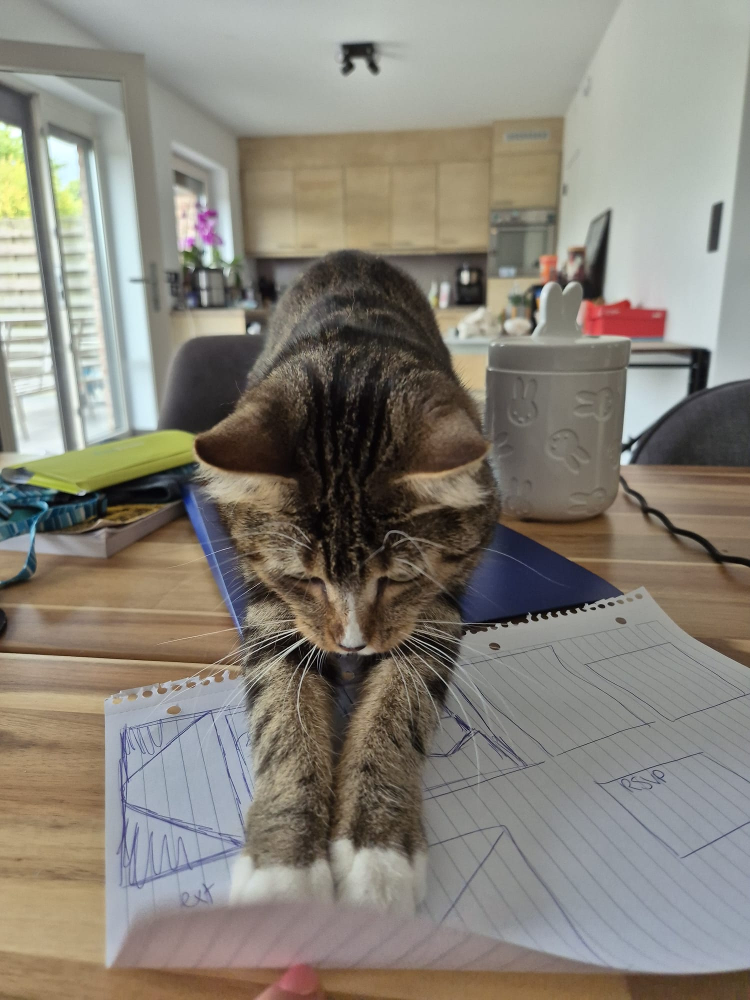
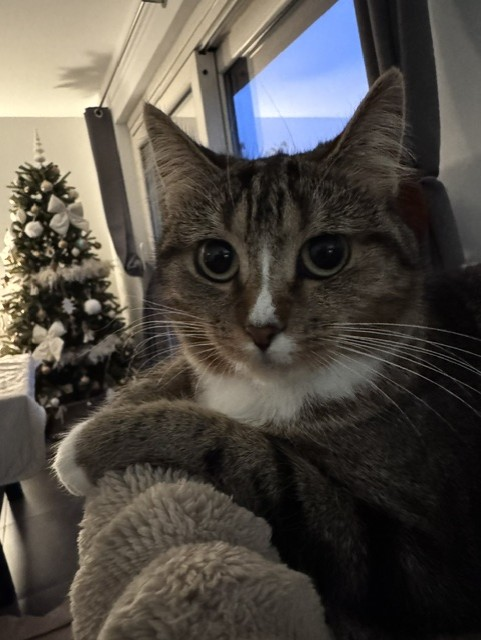
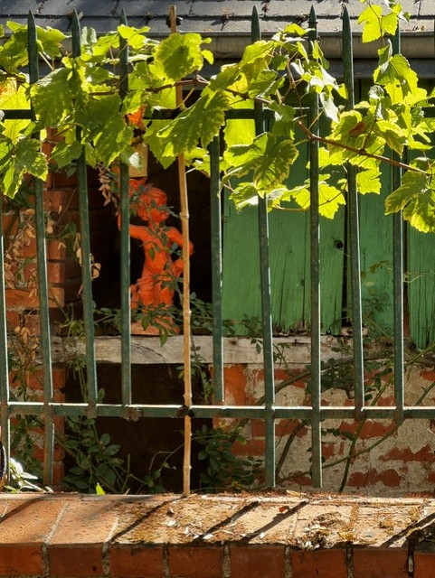
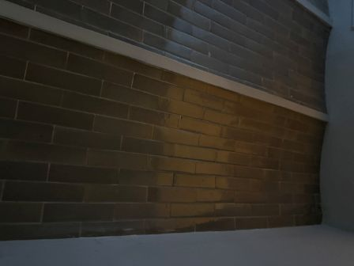

📁 Chapitre 2
Hoofdstuk 2
Les préparatifs continuent...
De voorbereidingen gaan verder...
Dossier d'enquête n°2
Quelques réponses.
Quelques avancées.
Beaucoup de mystères.
Onderzoeksdossier nr. 2
Enkele antwoorden.
Enkele stappen vooruit.
Heel wat mysteries.
🌸 Bienvenue dans la suite de l'aventure
Welkom bij het vervolg van het avontuur
Bien joué !
Vous avez trouvé la seconde partie du site.
Ici, nous partagerons avec vous les dernières nouvelles de l'organisation, quelques moments des préparatifs, plusieurs réponses aux questions qui nous sont régulièrement posées… et bien sûr quelques nouveaux indices pour les enquêteurs les plus motivés.
Nous souhaitons également remercier toutes les personnes qui ont déjà répondu à leur invitation. Votre enthousiasme nous fait énormément plaisir et nous aide beaucoup dans l'organisation de ce week-end.
Pour ceux qui n'auraient pas encore répondu, aucun stress : vous avez toujours jusqu'au 31 décembre. Mais si vous connaissez déjà votre disponibilité, n'hésitez pas à nous le faire savoir afin que nous puissions avancer sur d'autres éléments.
✅ Non, nous n'irons pas nous marier en Chine.
✅ Oui, tous les repas du jeudi soir au dimanche midi sont inclus.
✅ Non, le prix ne diminue pas si Mamie Bigou décide de sauter le dessert.
Goed gedaan!
Jullie hebben het tweede deel van onze website gevonden.
Hier delen we graag het laatste nieuws over de organisatie, enkele momenten van de voorbereidingen, antwoorden op vragen die we regelmatig krijgen… en natuurlijk ook enkele nieuwe aanwijzingen voor de meest gemotiveerde speurders.
We willen ook iedereen bedanken die al op de uitnodiging heeft gereageerd. Jullie enthousiasme doet ons enorm veel plezier en helpt ons erg bij de organisatie van dit weekend.
Voor wie nog niet geantwoord heeft: geen paniek, jullie hebben nog tijd tot 31 december. Maar als je je beschikbaarheid al kent, laat het ons dan gerust weten, zodat we met andere zaken verder kunnen.
✅ Nee, we trouwen niet in China.
✅ Ja, alle maaltijden van donderdagavond tot zondagmiddag zijn inbegrepen.
✅ Nee Annelien, je hoeft geen chips mee te brengen, Florian zal er voldoende voorzien hebben.
📬 Toutes les invitations ont été distribuées
Alle uitnodigingen zijn uitgedeeld
Ça y est !
Tous nos invités ont désormais reçu leur invitation officielle.
L'aventure est officiellement lancée pour tout le monde et les préparatifs continuent d'avancer à grands pas.
Het is zover!
Al onze gasten hebben nu hun officiële uitnodiging ontvangen.
Het avontuur is officieel gestart voor iedereen en de voorbereidingen gaan razendsnel.
📸 Les préparatifs avancent
De voorbereidingen vorderen




Ces dernières semaines ont été riches en avancées.
Nous avons désormais validé :
✅ La salle du mariage
✅ Le repas
✅ Le photographe
Une autre étape importante vient également d'être franchie : nos alliances ont été choisies et sont actuellement en production.
Nous allons également prochainement commencer les essayages avec nos témoins.
Plus le temps passe, plus le grand jour se rapproche… et plus le stress commence doucement à monter !
De voorbije weken hebben heel wat vooruitgang gebracht.
Dit hebben we intussen vastgelegd:
✅ De trouwzaal
✅ Het eten
✅ De fotograaf
Er is ook nog een belangrijke stap gezet: onze trouwringen zijn gekozen en worden momenteel gemaakt.
Binnenkort beginnen we ook met de pasafspraken met onze getuigen.
Hoe meer tijd er voorbijgaat, hoe dichter de grote dag komt… en hoe meer de stress zachtjes begint te stijgen!
🐱 Communiqué officiel de Lexy
Officieel bericht van Lexy

Après étude attentive de son invitation, Lexy a décidé de ne pas participer aux festivités.
Motif invoqué :
Si je ne suis pas le centre de l'attention pendant tout le week-end, je préfère décliner.
La direction regrette cette décision mais respecte son choix.
Na grondige studie van haar uitnodiging heeft Lexy beslist niet aan de festiviteiten deel te nemen.
Aangehaalde reden:
Als ik niet het middelpunt van de aandacht ben tijdens het hele weekend, blijf ik liever thuis.
De directie betreurt deze beslissing, maar respecteert haar keuze.
🎨 Les couleurs du samedi
De kleuren van zaterdag

Plusieurs personnes nous ont demandé quelles couleurs nous avions imaginées pour l'ambiance du samedi.
Cette palette est simplement là comme source d'inspiration.
Il ne s'agit absolument pas d'une obligation.
Le plus important reste que chacun se sente bien dans sa tenue.
Meerdere mensen vroegen ons welke kleuren we voor de sfeer van zaterdag in gedachten hadden.
Dit palet is gewoon bedoeld als inspiratie.
Het is absoluut geen verplichting.
Het belangrijkste blijft dat iedereen zich goed voelt in zijn of haar outfit.
🎵 Musique du moment
Muziek van het moment
Sunny - Bobby Hebb
Parce que chaque période des préparatifs mérite sa propre bande-son.
Want elke periode van de voorbereidingen verdient zijn eigen soundtrack.
🔎 Nouvelles pièces du dossier
Nieuwe stukken in het dossier
Devant les nombreuses demandes des enquêteurs, nous avons accepté de dévoiler quelques nouveaux éléments.
Nous ne garantissons cependant pas qu'ils vous aideront réellement...
Na de vele vragen van de speurders hebben we ingestemd om enkele nieuwe elementen te onthullen.
We garanderen echter niet dat ze jullie echt zullen helpen...




🌼 Conclusion
Besluit
Si vous êtes arrivés jusqu'ici, c'est probablement que vous faites partie des invités les plus curieux.
Le dossier continue de s'étoffer.
Les alliances sont en fabrication.
Les essayages approchent.
Les préparatifs avancent.
Et malgré toutes vos théories, le mystère demeure encore entier.
Rendez-vous dans quelques semaines pour le prochain chapitre...
Avec peut-être de nouveaux indices.
Ou peut-être simplement de nouvelles fausses pistes.
😉
Als jullie tot hier gekomen zijn, behoren jullie waarschijnlijk tot de meest nieuwsgierige gasten.
Het dossier wordt steeds dikker.
De trouwringen worden gemaakt.
De pasafspraken komen eraan.
De voorbereidingen vorderen.
En ondanks al jullie theorieën blijft het mysterie nog volledig intact.
Tot over enkele weken voor het volgende hoofdstuk...
Misschien met nieuwe aanwijzingen.
Of misschien gewoon met nieuwe valse sporen.
😉
Hoofdstuk 3 volgt binnenkort...